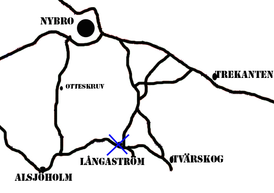
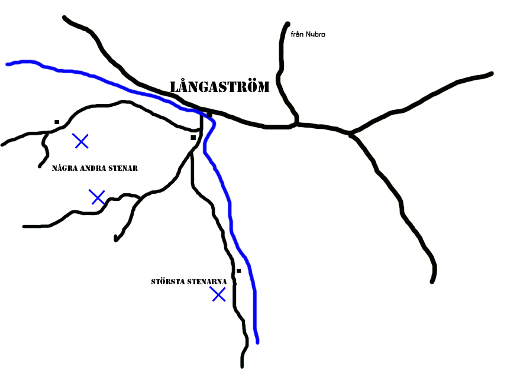

Långaström
Parkera bilen vid gammal husvagn och promenera till huvudblocken som ligger 20m neråt vägen. Mycket vackra stenar som bildar ett gäng överhäng.
Finns många stora stenar till. Två av dem utmärkta på kartan.
 Kategori:Småland
Copyright (C) Permission is granted to copy, distribute and/or modify this document under the terms of the GNU Free Documentation License, Version 1.3